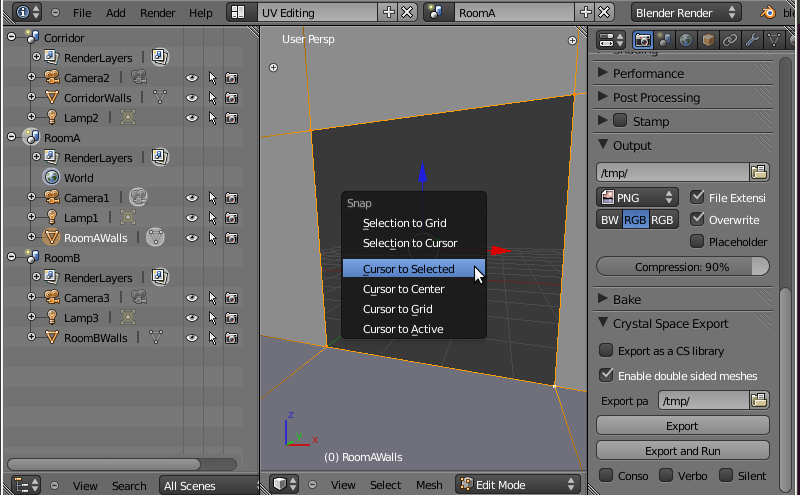
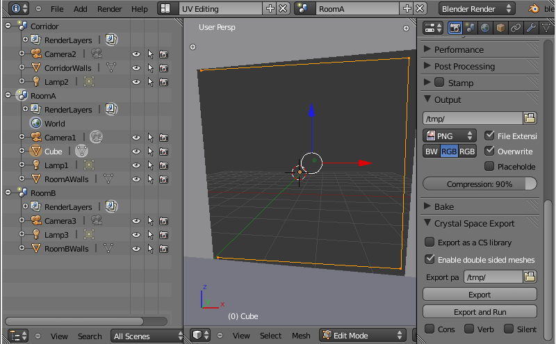
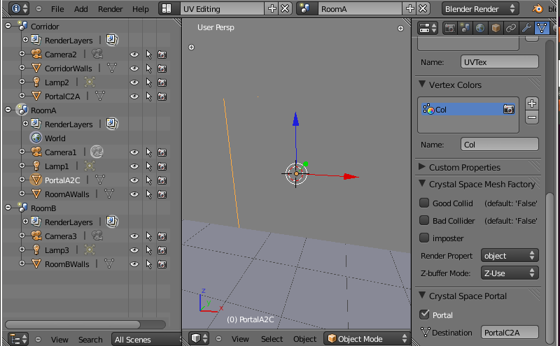

| [ < ] | [ > ] | [ << ] | [ Up ] | [ >> ] | [Top] | [Contents] | [Index] | [ ? ] |
This section presents how portals can be created in order to link the different sectors of a virtual environment. Each Blender scene in the file is exported as a Crystal Space sector, and the use of specific meshes allows to define portals between them.
This is made using the ‘Crystal Space Portal’ panel that is found in the ‘Object Data’ context of the ‘Properties’ window:
In order to define a portal, you must create two meshes that will be the source and the destination of the portal. Each mesh will be in a separate Blender scene so that the portal will lead from the first scene to the second one (this is not a limitation and a portal is allowed to lead to the same sector than the starting one).
You must pay attention to the shape of your source mesh as well as to the order of its vertices. The shape of the mesh will be used as the one of the Crystal Space portal, but one tricky problem is that the order of creation of the vertices will also define its orientation. For a correct behavior, be sure to create the vertices of your source mesh in clockwise order when you look at the portal.
Unless you plan to create another portal to go back in the other direction, the actual shape of the destination mesh has no importance at all, only its position will be important.
Once the two portal meshes are created, select the source mesh, go to the ‘Crystal Space Portal’ panel, and activate the ‘Portal’ checkbox. A text entry ‘Destination mesh’ appears, you must now type into it the name of the destination mesh of the portal. Once done, the object will be exported as a portal instead of a mesh.
You must also pay attention to the relative transform of the source and destination meshes since it will define the warping transform that is applied when crossing the portal. If the source and the destination of the portal are the same (i.e. there is no warping transform), then the two meshes should be at the same position.
As an example we will follow the making of the file ‘portaltut.blend’ that can be found in the CS/browser/CSAssets/trunk/blender/ SVN repository.
The example is split in three different scenes that will correspond to three different sectors in Crystal Space: two rooms ‘roomA’ and ‘roomB’, to be linked by a transitional sector ‘Corridor’. The goal of this example will be to create the portals in order to travel from one room to the other.
The walls of the rooms have already been created, and some holes have been dug that have to be replaced by the portals:

Let's do the following steps:







If some of the portals don't look ok while exporting Blender worlds, check that:
If you still have a defective portal after you have checked those points, it is highly probable that the relative transform of the source and destination mesh is causing the problem. A good hint in this case is to move the destination mesh at the same position and orientation than the source mesh in order to get a valid portal with an identity warping transform, then, starting from this configuration, move the destination mesh by small steps in order to visualize the changes.
| [ < ] | [ > ] | [ << ] | [ Up ] | [ >> ] | [Top] | [Contents] | [Index] | [ ? ] |
This document was generated using texi2html 1.76.